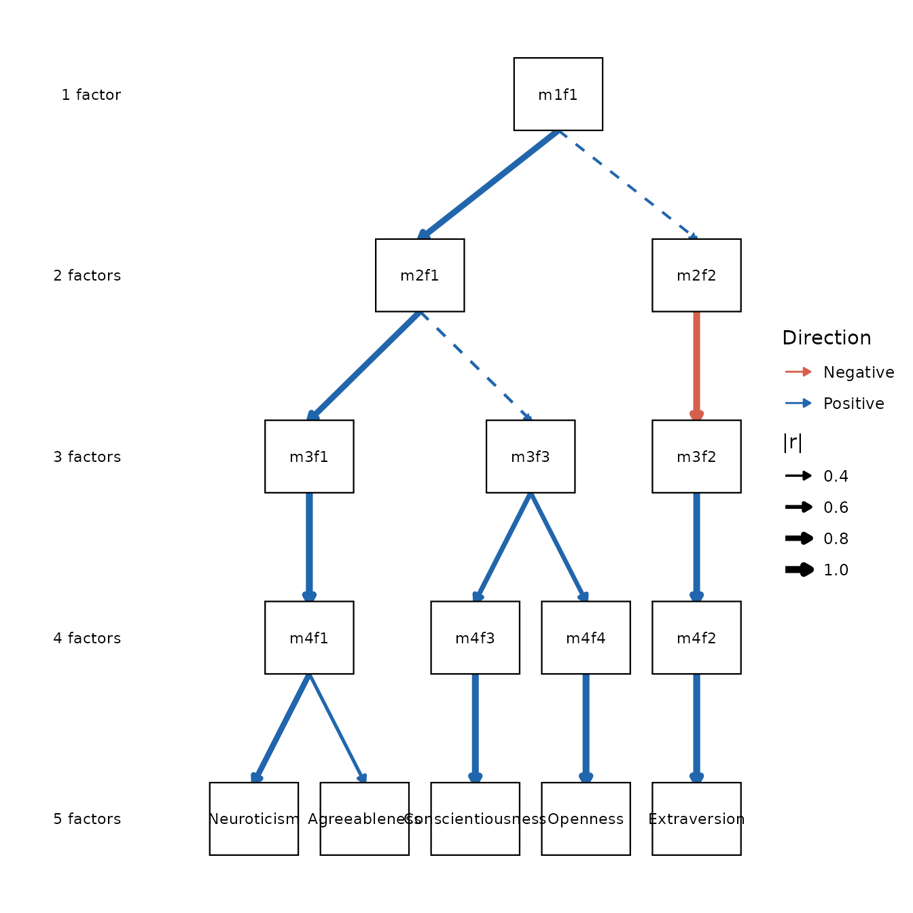
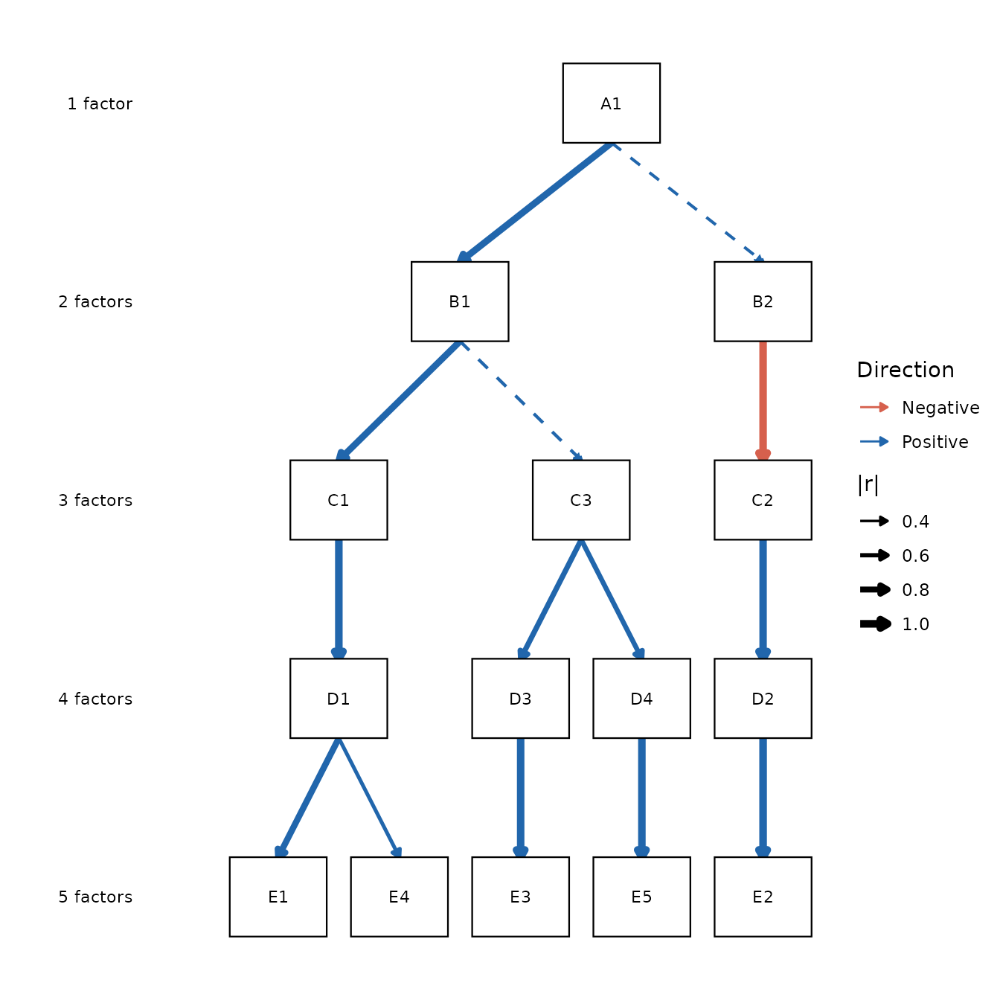

library(ackwards)
bfi <- na.omit(bfi25)
# BFI items are ordinal, so use polychoric correlations (matches the intro and
# visualization vignettes). This also avoids the ordinal-detection warning.
x <- ackwards(bfi, k_max = 5, cor = "polychoric")Fitting an ackwards model gives you a hierarchy of
factors with stable but opaque IDs — m1f1,
m2f1, m2f2, and so on. Turning those IDs into
something you can reason about is interpretive work: you read
each factor’s loadings, decide what construct it represents, and give it
a name. This is the part of the analysis that requires judgment, and it
is harder in a bass-ackwards hierarchy than in a single flat factor
solution, because the same construct can appear, split, and merge across
levels.
This article covers the full workflow:
-
Read each factor with
top_items(). - Understand the sign convention so you don’t misread a factor.
- Name factors in a way that respects the hierarchy.
-
Apply your names to the diagram with
label_template()andautoplot(node_labels = ...).
Reading a factor with top_items()
A factor is defined by the items that load strongly on it.
top_items() lists, for each factor, the items whose
absolute loading meets a threshold, sorted from strongest to weakest.
This is far easier to read than a full item-by-factor matrix, especially
at deeper levels.
top_items(x, level = 5)
#>
#> ── Salient items by factor (ackwards) ──────────────────────────────────────────
#> Engine: pca
#> Cut: |loading| >= 0.3
#> Top-n: all
#>
#> ── Level 5 (5 factors) ──
#>
#> m5f1
#> E2 [-0.752]
#> E4 [0.747]
#> E1 [-0.701]
#> E3 [0.677]
#> E5 [0.597]
#> A5 [0.487]
#> A3 [0.415]
#> O3 [0.394]
#> N4 [-0.314]
#> O1 [0.302]
#> m5f2
#> N3 [0.825]
#> N1 [0.810]
#> N2 [0.805]
#> N5 [0.688]
#> N4 [0.646]
#> C5 [0.344]
#> O4 [0.317]
#> m5f3
#> C2 [0.735]
#> C4 [-0.716]
#> C1 [0.690]
#> C3 [0.679]
#> C5 [-0.652]
#> E5 [0.448]
#> A4 [0.345]
#> m5f4
#> A1 [-0.704]
#> A3 [0.703]
#> A2 [0.692]
#> A5 [0.580]
#> A4 [0.522]
#> m5f5
#> O5 [-0.705]
#> O3 [0.655]
#> O1 [0.604]
#> O2 [-0.595]
#> O4 [0.551]
#> ────────────────────────────────────────────────────────────────────────────────
#> Loadings reflect primary-parent sign alignment. Use tidy(x, what = "loadings")
#> for the full matrix.The default cut = 0.3 shows every item with
|loading| >= 0.3. Raise it to isolate the items that
most define each factor, or lower it to surface weaker
cross-loadings.
top_items(x, level = 5, cut = 0.45)
#>
#> ── Salient items by factor (ackwards) ──────────────────────────────────────────
#> Engine: pca
#> Cut: |loading| >= 0.45
#> Top-n: all
#>
#> ── Level 5 (5 factors) ──
#>
#> m5f1
#> E2 [-0.752]
#> E4 [0.747]
#> E1 [-0.701]
#> E3 [0.677]
#> E5 [0.597]
#> A5 [0.487]
#> m5f2
#> N3 [0.825]
#> N1 [0.810]
#> N2 [0.805]
#> N5 [0.688]
#> N4 [0.646]
#> m5f3
#> C2 [0.735]
#> C4 [-0.716]
#> C1 [0.690]
#> C3 [0.679]
#> C5 [-0.652]
#> m5f4
#> A1 [-0.704]
#> A3 [0.703]
#> A2 [0.692]
#> A5 [0.580]
#> A4 [0.522]
#> m5f5
#> O5 [-0.705]
#> O3 [0.655]
#> O1 [0.604]
#> O2 [-0.595]
#> O4 [0.551]
#> ────────────────────────────────────────────────────────────────────────────────
#> Loadings reflect primary-parent sign alignment. Use tidy(x, what = "loadings")
#> for the full matrix.When a factor has many salient items, n caps the list at
the strongest few so you can see the core of each factor at a
glance:
top_items(x, level = 5, cut = 0.3, n = 4)
#>
#> ── Salient items by factor (ackwards) ──────────────────────────────────────────
#> Engine: pca
#> Cut: |loading| >= 0.3
#> Top-n: 4
#>
#> ── Level 5 (5 factors) ──
#>
#> m5f1
#> E2 [-0.752]
#> E4 [0.747]
#> E1 [-0.701]
#> E3 [0.677]
#> m5f2
#> N3 [0.825]
#> N1 [0.810]
#> N2 [0.805]
#> N5 [0.688]
#> m5f3
#> C2 [0.735]
#> C4 [-0.716]
#> C1 [0.690]
#> C3 [0.679]
#> m5f4
#> A1 [-0.704]
#> A3 [0.703]
#> A2 [0.692]
#> A5 [0.580]
#> m5f5
#> O5 [-0.705]
#> O3 [0.655]
#> O1 [0.604]
#> O2 [-0.595]
#> ────────────────────────────────────────────────────────────────────────────────
#> Loadings reflect primary-parent sign alignment. Use tidy(x, what = "loadings")
#> for the full matrix.By default items are sorted by descending |loading|. If
your items have a meaningful order (for example, a numbered scale you
want to keep in sequence), set sort = FALSE.
top_items() returns an object whose $data
field is a plain data frame — a filtered, sorted slice of
tidy(x, what = "loadings") — so you can compute on it if
you need to:
ti <- top_items(x, level = 5, cut = 0.3)
head(ti$data)
#> level factor item loading
#> 1 5 m5f1 E2 -0.7523369
#> 2 5 m5f1 E4 0.7468932
#> 3 5 m5f1 E1 -0.7011135
#> 4 5 m5f1 E3 0.6769085
#> 5 5 m5f1 E5 0.5974602
#> 6 5 m5f1 A5 0.4869514Cross-loadings are signal
Items that load on more than one factor are not noise to be suppressed — they often tell you how two factors relate. Lowering the cut reveals them:
top_items(x, level = 3, cut = 0.25)
#>
#> ── Salient items by factor (ackwards) ──────────────────────────────────────────
#> Engine: pca
#> Cut: |loading| >= 0.25
#> Top-n: all
#>
#> ── Level 3 (3 factors) ──
#>
#> m3f1
#> E4 [0.784]
#> A3 [0.750]
#> A5 [0.735]
#> E2 [-0.698]
#> E3 [0.664]
#> A2 [0.650]
#> E1 [-0.611]
#> E5 [0.507]
#> A4 [0.490]
#> O3 [0.355]
#> A1 [-0.354]
#> O1 [0.253]
#> C5 [-0.252]
#> m3f2
#> N3 [0.812]
#> N2 [0.791]
#> N1 [0.777]
#> N4 [0.680]
#> N5 [0.650]
#> C5 [0.428]
#> O4 [0.414]
#> C4 [0.348]
#> m3f3
#> C1 [0.658]
#> C2 [0.642]
#> C4 [-0.609]
#> O5 [-0.553]
#> O2 [-0.520]
#> O3 [0.504]
#> O1 [0.493]
#> C3 [0.476]
#> C5 [-0.453]
#> E5 [0.392]
#> O4 [0.319]
#> ────────────────────────────────────────────────────────────────────────────────
#> Loadings reflect primary-parent sign alignment. Use tidy(x, what = "loadings")
#> for the full matrix.An item that appears under two factors at the same level marks a
point where the constructs overlap. Whether that overlap is
substantively meaningful or a sign of overextraction is a judgment call
— see vignette("ackwards-suggest-k") for the overextraction
discussion.
The sign convention: negative does not mean “low”
Before naming anything, understand how ackwards orients
factors. Loadings are sign-aligned to the primary
parent (see ?ackwards): the level-1 factor is
anchored so its loadings sum positive, and every deeper factor is
flipped so its correlation with its primary parent is positive. This
makes the diagram readable, but it has a consequence for
interpretation.
A factor’s sign is arbitrary in the sense that flipping every loading and the factor’s orientation describes the same dimension. So a column of negative loadings does not mean “low” on that construct — it means the construct’s positive pole was oriented the other way by the alignment step. Read the pattern of items, not the bare sign:
top_items(x, level = 2)
#>
#> ── Salient items by factor (ackwards) ──────────────────────────────────────────
#> Engine: pca
#> Cut: |loading| >= 0.3
#> Top-n: all
#>
#> ── Level 2 (2 factors) ──
#>
#> m2f1
#> A3 [0.730]
#> A5 [0.694]
#> E3 [0.684]
#> A2 [0.661]
#> E4 [0.638]
#> E5 [0.630]
#> E2 [-0.614]
#> O3 [0.565]
#> E1 [-0.525]
#> A4 [0.471]
#> C2 [0.468]
#> O1 [0.467]
#> C1 [0.421]
#> C5 [-0.411]
#> C4 [-0.389]
#> C3 [0.365]
#> A1 [-0.335]
#> m2f2
#> N3 [-0.806]
#> N1 [-0.790]
#> N2 [-0.789]
#> N4 [-0.677]
#> N5 [-0.659]
#> C5 [-0.491]
#> C4 [-0.438]
#> O4 [-0.358]
#> ────────────────────────────────────────────────────────────────────────────────
#> Loadings reflect primary-parent sign alignment. Use tidy(x, what = "loadings")
#> for the full matrix.If a Neuroticism factor shows up with negative loadings on the
anxiety items, that is an orientation artifact of the alignment, not a
“low anxiety” factor. Name it for the construct (Neuroticism), and if
the sign matters for your downstream use, flip the scores yourself. The
values shown by top_items() and
tidy(what = "loadings") are the aligned values, so they are
consistent with the diagram and the edge table.
Naming in a hierarchy
In a flat factor solution you name each factor once. In a bass-ackwards hierarchy you are naming factors at every level, and the levels are related — so the names should be related too. The lineage tells you how.
summary(x)
#>
#> ── Summary: Bass-Ackwards Analysis (ackwards) ──────────────────────────────────
#> Engine: pca
#> Rotation: varimax
#> Basis: polychoric
#> n: 875
#> k (max): 5
#>
#> ── Levels ──
#>
#> k = 1: 1 factor (23.21% cumulative variance)
#> m1f1 23.21% eigenvalue 5.8
#> k = 2: 2 factors (35.48% cumulative variance)
#> m2f1 20.94% eigenvalue 5.8
#> m2f2 14.54% eigenvalue 3.07
#> k = 3: 3 factors (44.58% cumulative variance)
#> m3f1 18.04% eigenvalue 5.8
#> m3f2 13.89% eigenvalue 3.07
#> m3f3 12.66% eigenvalue 2.28
#> k = 4: 4 factors (52.17% cumulative variance)
#> m4f1 17.5% eigenvalue 5.8
#> m4f2 13.63% eigenvalue 3.07
#> m4f3 11.83% eigenvalue 2.28
#> m4f4 9.21% eigenvalue 1.9
#> k = 5: 5 factors (58.42% cumulative variance)
#> m5f1 13.75% eigenvalue 5.8
#> m5f2 13.56% eigenvalue 3.07
#> m5f3 11.9% eigenvalue 2.28
#> m5f4 10.09% eigenvalue 1.9
#> m5f5 9.12% eigenvalue 1.56
#>
#> ── Lineage (primary parents) ──
#>
#> m1f1 → m2f1, m2f2
#> m2f1 → m3f1, m3f3
#> m2f2 → m3f2
#> m3f1 → m4f1
#> m3f2 → m4f2
#> m3f3 → m4f3, m4f4
#> m4f1 → m5f1, m5f4
#> m4f2 → m5f2
#> m4f3 → m5f3
#> m4f4 → m5f5
#> ────────────────────────────────────────────────────────────────────────────────
#> Note: This is a series of linked solutions, not a fitted hierarchical model.
#> Cross-level edges are descriptive score correlations.The lineage list (m1f1 → m2f1, m2f2 → ...) shows each
factor’s primary children. Use it to name top-down:
Upper-level factors are broader. A level-2 factor that is the primary parent of two level-3 factors is the construct they share. Name it for the blend, not for one child. In the
bfidata above, the level-1 factor is a single broad dimension; at level 2 it separates into a Neuroticism factor (m2f2, defined by the N items) and a broad factor blending the remaining four trait families (m2f1). The Big Five themselves do not appear cleanly until level 5 — so a substantive name form2f1(“broad well-adjustment”, say) is necessarily coarser than the names you give its descendants.A split is a refinement, not a contradiction. When a parent factor splits into two children, the children carve up the parent’s content. Their names should read as specializations of the parent’s name, so that reading down a branch tells a coherent story.
Watch for factors that reorganize. A child whose strongest parent is at the other side of the level above (a crossing edge), or a factor whose primary edge is weak (
|r|well below the near-1.0 values of stable dimensions), is a place where the structure is genuinely rearranging. The edge table makes these visible:
# Primary-parent edges, weakest last: the bottom rows are where structure shifts
tidy(x, what = "edges", primary_only = TRUE, sort = "strength") |> tail()
#> from to level_from level_to r is_primary above_cut
#> 9 m4f1 m5f1 4 5 0.8377659 TRUE TRUE
#> 10 m3f3 m4f3 3 4 0.7316162 TRUE TRUE
#> 11 m3f3 m4f4 3 4 0.6802343 TRUE TRUE
#> 12 m4f1 m5f4 4 5 0.5458269 TRUE TRUE
#> 13 m2f1 m3f3 2 3 0.4814452 TRUE TRUE
#> 14 m1f1 m2f2 1 2 0.4558587 TRUE TRUEEdges with |r| near 1.0 are factors that pass through
nearly unchanged — name the child the same as the parent. The smaller
|r| values at the bottom flag where a new, distinct
construct is emerging and deserves its own name.
Applying your names
Once you have decided on names, attach them to the diagram.
autoplot() takes a node_labels argument: a
named character vector mapping factor IDs to display strings.
Typing that vector out by hand is tedious and error-prone, so
label_template() generates it for you, in the same order
the diagram uses, and prints an editable c(...) literal you
can paste straight into your script:
label_template(x)
#> `label_template()` scaffold (id style):
#> c(
#> "m1f1" = "m1f1",
#> "m2f1" = "m2f1",
#> "m2f2" = "m2f2",
#> "m3f1" = "m3f1",
#> "m3f2" = "m3f2",
#> "m3f3" = "m3f3",
#> "m4f1" = "m4f1",
#> "m4f2" = "m4f2",
#> "m4f3" = "m4f3",
#> "m4f4" = "m4f4",
#> "m5f1" = "m5f1",
#> "m5f2" = "m5f2",
#> "m5f3" = "m5f3",
#> "m5f4" = "m5f4",
#> "m5f5" = "m5f5"
#> )Copy that literal, fill in your names, and pass it to
autoplot(). Unspecified IDs keep their default
m{k}f{j} label, so you can label just the level you care
about:
autoplot(x, node_labels = c(
m5f1 = "Neuroticism",
m5f2 = "Extraversion",
m5f3 = "Conscientiousness",
m5f4 = "Agreeableness",
m5f5 = "Openness"
))
The Forbes letter convention
Forbes (2023) labels nodes by level-letter and within-level index —
A1 for the single level-1 factor,
B1/B2 at level 2, and so on.
label_template() produces this convention directly with
style = "forbes":
autoplot(x, node_labels = label_template(x, style = "forbes"))
#> `label_template()` scaffold (forbes style):
#> c(
#> "m1f1" = "A1",
#> "m2f1" = "B1",
#> "m2f2" = "B2",
#> "m3f1" = "C1",
#> "m3f2" = "C2",
#> "m3f3" = "C3",
#> "m4f1" = "D1",
#> "m4f2" = "D2",
#> "m4f3" = "D3",
#> "m4f4" = "D4",
#> "m5f1" = "E1",
#> "m5f2" = "E2",
#> "m5f3" = "E3",
#> "m5f4" = "E4",
#> "m5f5" = "E5"
#> )
This is useful when you want to refer to nodes by position rather than by substantive name — for example, in a methods section that walks through the hierarchy before interpreting it.
Starting from a blank slate
If you would rather supply every label yourself with no defaults
showing through, style = "blank" gives you an all-empty
scaffold to fill in:
labs <- label_template(x, style = "blank")
#> `label_template()` scaffold (blank style):
#> c(
#> "m1f1" = "",
#> "m2f1" = "",
#> "m2f2" = "",
#> "m3f1" = "",
#> "m3f2" = "",
#> "m3f3" = "",
#> "m4f1" = "",
#> "m4f2" = "",
#> "m4f3" = "",
#> "m4f4" = "",
#> "m5f1" = "",
#> "m5f2" = "",
#> "m5f3" = "",
#> "m5f4" = "",
#> "m5f5" = ""
#> )
labs["m5f1"] <- "N"
labs["m5f2"] <- "E"
labs["m5f3"] <- "C"
labs["m5f4"] <- "A"
labs["m5f5"] <- "O"
autoplot(x, node_labels = labs)Where to go next
This article is about what to put on the diagram. For
how the diagram looks — colours, edge thresholds, monochrome
and publication styling, level labels, and the Forbes pruned-diagram
mode — see vignette("ackwards-visualization").